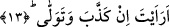
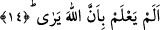

gelmiştir. Çünkü “eraeyte” fiilinin ikinci mef’ulü soru cümlesi veya kasem cümlesi
olamaz. Bu şart fiilinin cevabının hazfedilmesi şartın cevabı ile yetinilebilmiş
olmasından dolayıdır. Çünkü “in kezzebe ve tevella/yalanlıyor ve yüz çeviriyorsa”
ifâdesi birinci şarta mukabil olarak gelmiştir. Birinci şart ise; “in kane alel hüda ev
emera bittakvâ...” cümlesidir. Bu âyet-i kerime aslında o kulu namaz kılmaktan alakoyan
kimseyi alaya alan bir cümledir. Allah Teâlâ’ya ibâdeti yasak etmek ve putlara ibâdeti
emretmek elbette ve kesin olarak hidâyet üzere olmak demek değildir.
13. Ne dersin o (meneden, Peygamber’i) yalanlıyor ve doğru yoldan yüz
çeviriyorsa!
“Ne dersin o yasaklayan kimse bizim dediğimiz gibi hakkı yalanlıyor ve doğru yoldan
yüz çeviriyorsa...”
Bu âyetlerde takvâyı emretmenin, hakkı yalanlamanın ve doğrudan yüz çevirmenin
meydana gelmekle gelmemek arasında tereddüd uyandıran şart cümlesi formunda ifâde
edilmesi, zikredilen bu fiillerin söz konusu fâilden çıkıp çıkmaması açısından değildir.
Çünkü bunlar kesinlikle tereddüd edilecek şeyler değildir. Tam tersine yukardaki
fiillerin sözünü ettiğimiz formda ifâde edilmiş olması bunları “takvâyı emir, yalanlama
ve yüz çevirme” olarak vasıfları itibari iledir.
14. (Bu adam) Allah’ın, (yaptıklarını) gördüğünü bilmez mi!
“(Bu adam) Allah’ın” kendi durumunu “gördüğünü” ve durumuna göre kendisine
karşılığını vereceğini “bilmez mi?” ki yapmış olduğu o fiili işlemeye cesaret
edebiliyor. Bu sorunun anlamı; evet o yasak eden kimse biliyor ki Allah Teâlâ onun
ahvalini görüyor. O halde ondan işlemiş olduğu bu fiiller nasıl oluyor da sâdır oluyor,
meydana geliyor?
Yukarda okuduğumuz âyette, hakkı yalanlama ve yüz çevirme fiilleri başlı başına ayrı
bir şart cümlesi formunda üstelik cevabına bitişik olarak getirilmiş ve başında, “haber
ver” şeklinde bir bağımsız taleb ifâdesi yer almıştır. Bu yüz çevirme ve yalanlama
fiilleri birinci şart cümlesi içinde gelmemiştir. Bir başka ifâde ile onlara
atfedilmemiştir. Böylece hakkı yalanlama ile ondan yüz çevirme fiilinin başlı başına
birer fiil olduklarına ve şartın cevabında ifâde edilen tehdidi doğurucu fiiller
olduklarına işâret olunmuştur. Birinci kısma gelince bu kısım için böyle düşünmek
imkansızdır. Çünkü o dâirenin geniş tutulması için şartın içinde zikredilmiştir. Birinci